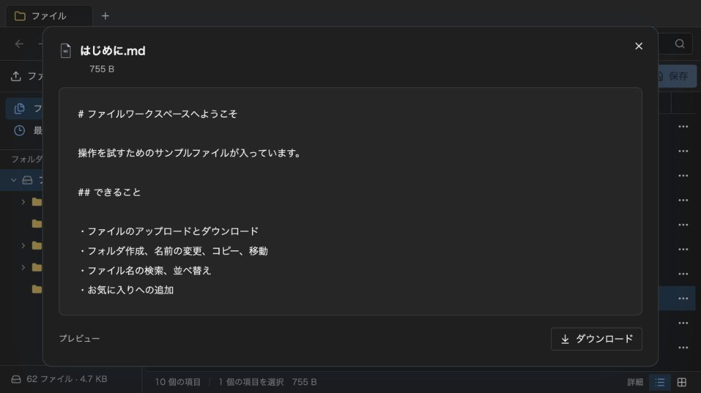

@likex/explorer
プレビュー
内蔵プレビューを使うか、onPreviewRequestでファイル情報を親のビューへ渡します。
画面例を見る ↓ファイル情報を親へ渡し、独自のカードやダイアログでプレビューする方法です。
プレビューを親画面へ渡す#
onPreviewRequest で、ファイルを開いたときの表示を親画面へ任せられます。コールバックを指定すると内蔵プレビューダイアログの代わりに要求を渡し、指定しなければ内蔵プレビューを使います。
| prop | 動作 |
|---|---|
onPreviewRequest?: ExplorerPreviewHandler | 開くファイルの情報を受け取ります。戻り値は void または Promise<void>。同期例外・PromiseのrejectはExplorerがエラー通知します。 |
previewTrigger?: ExplorerPreviewTrigger | "doubleClick"（既定）または "click"。"click" はファイル名の単クリックでプレビューします。 |
"click" ではファイル名クリックのプレビューを名前の再クリックによる改名より優先します。名前変更はF2、右クリックの「名前を変更」、ツールバーから開始できます。Ctrl/Cmd・Shift付きクリックによる選択や、名前以外の部分のダブルクリックは維持します。フォルダを開くときは通常どおりフォルダへ移動します。features.preview: false は内蔵プレビューと外部コールバックの両方を無効にします。
次の型を @/components/explorer からimportできます。リクエストは ExplorerEntry の全フィールドを持ち、ファイルに限定した kind、正規化済みの extension と現在の path を含みます。ExplorerItemInfo は、操作・状態イベントでも使うファイル・フォルダ共通の情報です。
type ExplorerPreviewTrigger = "doubleClick" | "click";
type ExplorerItemInfo = Readonly<
Omit<ExplorerEntry, "source"> & {
source: Readonly<NonNullable<ExplorerEntry["source"]>> | null;
path: string;
extension: string;
}
>;
type ExplorerPreviewRequest = ExplorerItemInfo & Readonly<{ kind: "file" }>;
type ExplorerPreviewHandler = (
request: ExplorerPreviewRequest,
) => void | Promise<void>;| フィールド | 内容 |
|---|---|
id | Explorer内の項目ID。ファイル本体のIDとは別です。 |
parent | 親フォルダのエントリーID。最上位にあるファイルは "root"。 |
name | 要求時点の表示名。未保存の名前変更も反映します。 |
kind | プレビュー要求では常に "file"。フォルダはプレビュー要求の対象になりません。 |
size | ファイルサイズ。単位はbytes（バイト）です。 |
mime | エントリーに設定されたMIMEタイプ。例: "application/pdf"。 |
createdAt / updatedAt | エントリーの作成日時・更新日時を表す、時差を含むISO 8601文字列。Blob保存先の日時を改めて取得するものではありません。 |
favorite | お気に入りの状態を表す数値。0 は未登録、通常 1 は登録済みです。 |
path | /記事/test.pdf のような、最新の下書き上のファイルパス。rootLabel は含まず、Blobの保存キーやURLを表すものではありません。 |
extension | 最後の拡張子を小文字・先頭の点なしで表します。report.PDF は "pdf"、archive.tar.gz は "gz"、README や .env は "" です。 |
source | 既存ファイルは { kind: "existing", id }、未保存の追加ファイルは { kind: "local", file }。local.file は選択したブラウザーの File です。本体参照がない場合は null です。 |
Explorerはコールバックを呼ぶ前に readFile で本体を読み込みません。親の表示で本体が必要なら、existing の source.id を親の読込処理へ渡すか、local.file をそのまま使います。要求と source は読み取り専用の型で渡すコピーで、ローカルの File は元のオブジェクトを参照します。親stateに保持した要求は呼出時点の情報で、その後の移動や保存によって自動更新されません。
指定ファイルのプレビューを最初から開く#
selectedFile にファイルの ExplorerEntry.id、selectedFileMode="preview" を指定すると、初期選択と同時にプレビューを要求します。selectedFileMode の公開型は ExplorerSelectedFileMode = "select" | "preview" で、既定は "select" です。
<Explorer
initialEntries={savedEntries}
selectedFile="file-report"
selectedFileMode="preview"
onPreviewRequest={showPreview}
/>この showPreview は親が実装した ExplorerPreviewHandler です。通常のファイル操作と同じリクエストを受け取り、初期起動でもID・パス・名前・拡張子・本体参照を使えます。未指定なら内蔵プレビューを使い、既存ファイルの本体取得には readFile を渡します。
起動はクライアントで表示されたときに一度だけ行い、SSR中には呼びません。ExplorerPopup では最初の open() で表示されたときが対象です。previewTrigger の設定にかかわらず起動し、features.preview: false なら要求しません。読み取り専用でも利用できます。initialPath との組み合わせ、無効なIDの扱い、初期設定を変える方法は導入ガイドを参照してください。
親stateで受け取り、横にカードを表示する#
次の例は、要求を受け取るたびにファイル情報のカードを更新します。保存・読込関数は親から渡すため、既存ファイルと未保存のローカルファイルのどちらにも使えます。
"use client";
import { useState } from "react";
import Explorer, {
type ExplorerProps,
type ExplorerPreviewHandler,
type ExplorerPreviewRequest,
} from "@/components/explorer";
type Props = Pick<ExplorerProps, "initialEntries" | "onSave" | "readFile">;
export default function ExplorerWithPreviewCard({
initialEntries,
onSave,
readFile,
}: Props) {
const [preview, setPreview] = useState<ExplorerPreviewRequest | null>(null);
const showPreview: ExplorerPreviewHandler = (request) => {
setPreview(request);
};
const source = preview?.source;
const sourceLabel = source?.kind === "existing"
? `保存済みの本体参照: ${source.id}`
: source?.kind === "local"
? `未保存のFile: ${source.file.name} (${source.file.size} bytes)`
: "本体参照なし";
return (
<div style={{ display: "flex", flexWrap: "wrap", gap: 16 }}>
<div style={{ height: 640, minWidth: 0 }}>
<Explorer
initialEntries={initialEntries}
onSave={onSave}
readFile={readFile}
previewTrigger="click"
onPreviewRequest={showPreview}
/>
</div>
<aside
aria-label="ファイルのプレビュー"
style={{ minWidth: 0, flex: "1 1 320px", border: "1px solid #ccc", borderRadius: 8, padding: 16 }}
>
{preview ? (
<>
<div style={{ display: "flex", alignItems: "start", justifyContent: "space-between", gap: 8 }}>
<h2 style={{ minWidth: 0, fontWeight: 600, overflowWrap: "anywhere" }}>
{preview.name}
</h2>
<button type="button" onClick={() => setPreview(null)}>
閉じる
</button>
</div>
<dl style={{ marginTop: 16, fontSize: 14, overflowWrap: "anywhere" }}>
<dt>ID</dt>
<dd>{preview.id}</dd>
<dt>表示パス</dt>
<dd>{preview.path}</dd>
<dt>拡張子</dt>
<dd>{preview.extension || "なし"}</dd>
<dt>本体</dt>
<dd>{sourceLabel}</dd>
</dl>
</>
) : (
<p>ファイル名をクリックすると、ここに情報を表示します。</p>
)}
</aside>
</div>
);
}このカードはメタデータだけを表示します。同じ preview stateを使って、親のダイアログや独自のPDFビューアー等を表示することもできます。外部プレビューへ切り替えても、既存ファイルの内蔵ダウンロードや画像サムネイルを使う場合は、Explorerへ引き続き readFile を渡します。親側の表示・読込・閉じる操作は親が管理し、features.preview を後から無効にしたときに既存のカードを閉じる処理も親側で行います。
画面例
{kind=link}
